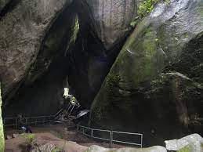
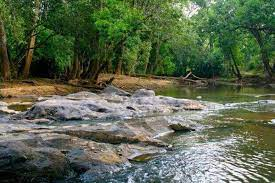
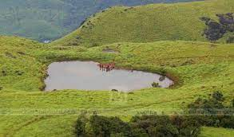

Wayanad is a rural district in Kerala state, southwest India. In the east, the Wayanad Wildlife Sanctuary is a lush, forested region with areas of high altitude, home to animals including Asiatic elephants, tigers, leopards and egrets. In the Ambukuthi Hills to the south, Edakkal Caves contain ancient petroglyphs, some dating back to the Neolithic age.

Edakkal caves are well known for its pictorial depictions (cave art), which are thought to be of 6000 B C. To achieve the hollows, one needs to trek through the Ambukutty Mala. It will take around 45 minutes to climb the hill and you will never get baffled in your outing to these historical caves & it is one of the famous places to see in Wayanad.
A perfect blend of different natural colours makes Kuruva Island one of the best places to visit in Wayanad. It is a protected river delta with a number of islands over the middle of Kabini River, the famous east flowing river in Kerala. The island is sprawling across an area of 950 acres with a dense population along with some rich and rare species of flora and fauna. It protects the evergreen forest ranges which provide a different ambience and thus making it an ideal choice for tourism. There are bridges made of bamboo trees and many plants which we have not even heard of.
Looking for a weekend getaway this weekend, then head out to Wayanad and visit the famous Chembra Peak. Eight kilometres south of Kalpetta, close to the town of Meppady, lays the most elevated top in Wayanad. Chembra crest borders Nilgiri slopes in Tamil Nadu and Vallarimala in Kozhikode and it is one of the beautiful places to see in Wayanad.
